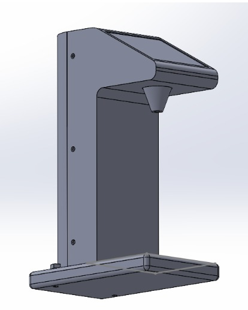
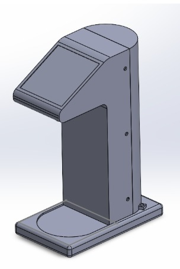

Enfoque y Características Generales
El dispensador de agua caliente elimina por completo la necesidad de cargar jarras pesadas, aplicar fuerza excesiva en las muñecas o lidiar con tapas difíciles, ofreciendo una experiencia sumamente amigable y accesible.
Interacción Física Adaptada
- Mecánica de dispensado sin esfuerzo físico.
- Tapa magnética de apertura simple.
- Base antideslizante y aislamiento térmico.
- Confirmación mediante avisos sonoros.
Gestión Automatizada
- Activación digital mediante botones táctiles.
- Comandos de voz para días de brotes de dolor.
- Ajuste automático de temperatura.
- Calentamiento rápido y apagado automático.
Dimensiones y Propiedades Físicas
El diseño volumétrico ha sido optimizado para ocupar un espacio mínimo en la encimera de la cocina, garantizando estabilidad estructural y una ergonomía visual impecable.


30 cm
10 cm
20 cm
1 cm Ø
Material de Fabricación: PLA
La carcasa principal estáfabricada mediante modelado e impresión 3D en ácido poliláctico (PLA), un polímero termoplástico rígido de alta calidad, sostenible y con excelente acabado superficial texturizado.
Funcionalidades y Complementos del Sistema
Para asegurar una experiencia óptima, el dispositivo contempla elementos esenciales como la seguridad térmica y un sistema de calentamiento rápido que resultan indispensables en el uso diario. Adicionalmente, se integran de forma natural opciones complementarias como el control exacto de temperatura y una taza ajustable que se adapta a diversos tamaños de recipientes.
Pensando en una experiencia superior, el diseño también contempla comodidades avanzadas opcionales como la integración con una aplicación móvil, iluminación nocturna en el área de servido, un dosificador automático para porciones exactas, filtrado de agua integrado y conexión directa a la toma de agua principal.